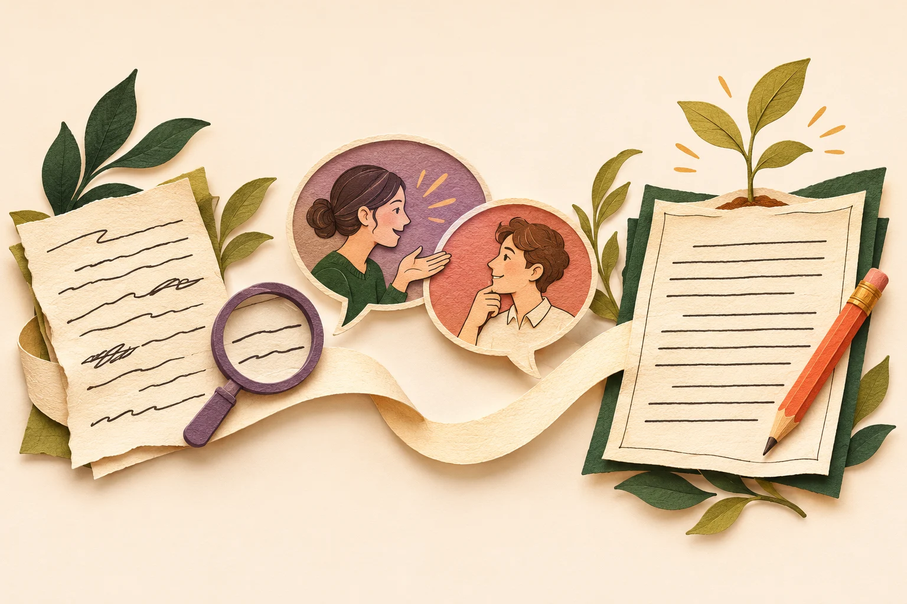

目的统领内容
按语篇目的选择
内容、结构和语言。
从日常写作课堂的一个问题出发
“内容再具体些。”
学生却仍在问：具体补什么？
从“哪里不好”走向“依据是什么”。
日常教学观察，用于说明设计起点；不是本次任务的统计结果。
按语篇目的选择
内容、结构和语言。
筛选主要内容
和支撑细节。
通过自评、互评
完善结构、内容和语言。
为此，设计习作互评项目
标准可见
判断有据
修改留痕
先明确题目、读者与写作目的，把评价要求交给学生。
新任务按四维判断；历史案例保留当时的五问记录。形成性档位不折算作文分数。
To Be a Better Me · 匿名真实案例
“she took me
to the stage”01已经写到害怕上台、朋友陪练、最后成功。
02继续展开朋友具体怎样帮助练习？
“建议在中间部分补充，
她具体是怎么帮助我练习的”
方向已经找到了，再看建议能否回到原稿。
同伴建议与 AI 反馈来自同一份记录；教师追问为教学示范。
首稿复核、发布反馈，安排互评。
看题目与标准，引用原文提交评阅。
查看 AI 核对，审核并发布建议。
回应、说明修改，提交并收取二稿。
实操入口的 A 案例已与“上台唱歌”统一；沿用这份原稿、真实评阅与当前进度。
说得出评在哪里、
判断依据是什么。
解释采纳、部分采纳
或保留的理由。
对照一稿、建议与二稿，
核查实际改动。
用短片段校准，练“引用—解释—建议”。
回到原稿核对识别与判断，再由教师把关。
把作者回应、二稿对照接入后续教学。

每次练好一条
有依据的重点建议。
核查改了哪里，
是否回应写作目的。
从经历到建议、说明，
减少提示，观察独立完成。
下一步教学设计；跨任务与长期效果仍需继续积累证据。
英语习作互评 · 以评促改
让一条有依据的建议，
走到学生自己的下一稿。